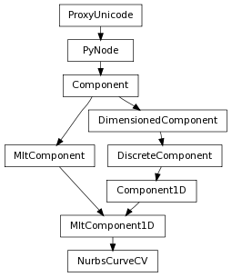

Return the position of the current CV.
| Parameters : |
|
|---|---|
| Return type: | Point |
Derived from api method maya.OpenMaya.MSpace.position
This method determines if the shape was created with history.
| Return type: | bool |
|---|
Derived from api method maya.OpenMaya.MItCurveCV.hasHistoryOnCreate
Returns true if the iteration is finished, i.e. there are no more CVs to iterate on.
| Return type: | bool |
|---|
Derived from api method maya.OpenMaya.MItCurveCV.isDone
Set the position of the current CV to the specified point.
| Parameters : | pt : Point space : Space.Space
|
|---|
Derived from api method maya.OpenMaya.MSpace.setPosition
Translates the current CV by the amount sepcified in vec .
| Parameters : | vec : Vector space : Space.Space
|
|---|
Derived from api method maya.OpenMaya.MSpace.translateBy
Undo is not currently supported for this method
This method is used to signal the curve that it has been changed and needs to redraw itself. Derived from api method maya.OpenMaya.MItCurveCV.updateCurve
Undo is not currently supported for this method